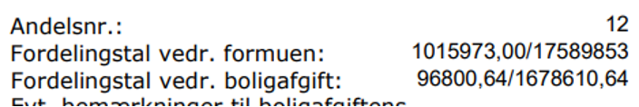
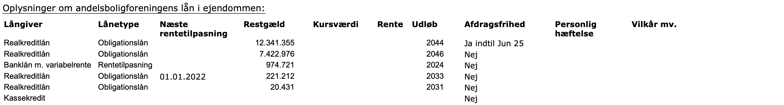

-

Finansiel rådgivning - Privat
Løsningsforslag
Andelsbolig
Formål:
Rådgivning i forbindelse med Andelsboligkøb.
Anslået tidsforbrug:
5 timer
Forudsætning:Materialerne er beskrevet i introen til ugen, herudover kan følgende links være nyttige:
Skatteskabelon
Excel SkatteskabelonenSalgsopstillinger
Salgsopstilling Andelsbolig Holmbladsgade
Salgsopstilling Andelsbolig Øresundsvej
Opgave:
Besvar spørgsmålene, upload i Workshop inden deadline.
Feedback:
Du kan se undervisers løsningsforslag og sammenligne med din egen opgave, når du har afleveret din besvarelse og markeret afleveringen som gennemført.
Bemærk Workshop opgaven er ikke obligatorisk, men det anbefales absolut at løse denne.
Oplysninger
Andelsbolig beregninger
Niels Nielsen er kunde i banken hvor du er rådgiver. Han har sammen med sin hustru været ude i sidste uge og se på en andelslejlighed.
De har 750.000 kr., som de lægger som udbetaling ved køb af andelsboligen
De er specielt interesserede i 2 andelsboliger en på Holmbladsgade og en anden bolig på Øresundsvej.
Han har listet en del spørgsmål op, som han meget gerne vil have besvaret af dig.Spørgsmål
-
Ud fra salgsopstillingen for Holmbladsgade, kan jeg se at andelslejligheden er sat til salg for 1.695.000 kr.
Kan vi om 2 år sælge den til f.eks. 2,0 mill. kr.?
Løsningsforslag:
Maksimalpris + forbedringer = Den højest opnåelige salgspris.
Niels og frue kan sælge til 2,0 mill. kr. om året såfremt:
Formuen i foreningen er steget (ejendommen vurderes højere og/eller gælden er blevet mindre.
Det vil betyde, at maksimalprisen stiger.
Hvis det går fremad på boligmarkedet, er der ikke behov for at give nedslag i maksimalprisen (i salgsopstillingen er der nedslag på 258.469 kr.)
Der foretages forbedringer i lejligheden af Niels og frue - de vil tælle med i ”hvad kan man sælge til”. MEN bemærk, der er meget høje forbedringer i andelen allerede - 937.496 kr.
Er det forbedringer som ”er værd at give penge for” skal køberne gøre op med sig selv! -
På side 2 i salgsopstillingen for Holmbladsgade, står der ”Fordelingstal vedr. foreningens formue” og ”Fordelingstal vedr. boligafgift”.
Hvad betyder det?
Løsningsforslag:
Fordelingstallet angiver hvor stor en del af andelsboligforeningen denne lejlighed ”er ansvarlig for”:
Hvor meget andelsboligen udgør af den samlede andelsboligforening.
Lejligheden har dermed andel i foreningens formue svarende til fordelingstallet, men står også ”ansvarlig” for den en del af gælden, jf. udregning af teknisk pris. Og ansvarlig for at betale ”den del af fællesudgifterne” som fordelings-tallet tilsiger.
Oftest er fordelingstallet det samme for formue, gæld og andel af boligafgiften.
Fordelingstallet udregnes som udgangspunkt ud af en af følgende metoder:
- Lejlighedens oprindelige andelsindskud /andelsboligforeningens samlede oprindelige indskud
- Lejlighedens m2 /andelsboligforeningens samledes m2
I salgsopstillingen er angivet følgende fordelingstal:

Tabel fra side 2 i salgsopstillingen.
Udregner man det i procent fås følgende tal:
Fordelingstal vedr. formuen 5,78%
Fordelingstal vedr. boligafgift 5,77%
I salgsopstillingen har man beregnet fordelingstallet lidt omvendt, idet man kender andelsværdien (1.015.973 kr) og så har man divideret med den samlede formue.
Man har ligeledes udregnet omvendt for boligafgift, som det fremgår af billedet ovenfor.
Vi beregner fordelingstallet i denne case som kvm på bolig divideret med samlet kvm.
Andelen udgør således 5,776 pct. af hele andelsboligforeningen og har dermed 5,776 pct. af andelsboligforeningens formue og gæld samt 5,776 pct. af de samledes udgifter i foreningen (som dermed omregnes til en boligafgift/boligydelse).
Stiger formuen med 1 mio. kr. vil andelen blive 5,776 pct. * 1 mio. kr. = 57.760 kr. mere værd.
Stiger udgifterne med 100.000 kr. vil andelens boligafgift stige med 5,776 pct. * 100.000 = 5.776 kr. om året svarende til knap 500 kr. pr. md.
Se udregninger i fanen "Andelsværdiberegner" i Excel løsningsforslaget sidst i løsningsforslaget.
-
Der er angivet en teknisk pris på 2.879.341 kr. på s.4 i salgsopstillingen for Holmbladsgade.
Hvordan udregnes den og hvad kan den anvendes til helt konkret?
Løsningsforslag:
Den tekniske pris siger hvad andelslejligheden ville koste hvis det var en ejerlejlighed,
dvs. vi omregner andelens pris til noget der ligner kontantprisen for en ejerlejlighed. Den tekniske pris kan også anvendes til at sammenligne to andelslejligheder.
Den tekniske pris = Købspris + andelens del af gælden (minus evt andel af omsætningsaktiver)
Se vejledende løsning for hvordan den beregnes i “Andelsbolig beregner Holmbladsgade”
Den tekniske pris kan anvendes til at udregne en teknisk m2-pris:
2.879.341/88 m2 = 32.720 kr. pr. m2.
For at vurdere om dette er højt eller lavt skal man kigge på boligsiden.dk og sammenligne m2-pris på ejerlejligheder i samme område.
Som tommelfingerregel skal m2-pris (udregnet på teknisk pris) være minimum 15-20 pct. lavere i en andel i forhold til ejer.
En andel må helst ikke koste mere end 80 pct. af m2-prisen på en ejerlejlighed:
Se udregninger i fanen "Andelsværdiberegner" i Excel løsningsforslaget sidst i løsningsforslaget.
-
Hvordan kan købet af andelen finansieres?
Løsningsforslag:
Udbetalingen ved køb af andelsboliger har et flertal i folketinget ønsket at ”sidestille” med udbetaling ved køb af ejerbolig.
At krav til udbetaling skal være det samme ligegyldigt om det er en andelsbolig eller ejerbolig.
Den enkleste måde at sammenligne en andelsbolig med en ejerbolig er at kigge på den tekniske pris, som angiver hvad andelen ville koste såfremt det var en ejerlejlighed.
Krav til udbetaling ved køb af andelsbolig = 5 pct. af andelsboligens tekniske pris
Udbetalingskrav = 5 pct. * 2.879.341 kr. = 143.967 kr.
Resten af købsprisen finansieres som et andelsbolig-banklån med en løbetid på op til 20-30 år (nogle banker vil kun 20 år) og med variabel rente (nogle tilbyder fast rente, men den er meget højere) -
Hvad nu hvis ejendommen falder med 10 mill.kr. i værdi om 1 år, hvordan vil det så påvirke mig hvis jeg køber andelen i dag?
Løsningsforslag:
Falder ejendommen med10 mio. kr. falder foreningens formue tilsvarende med 10 mio.kr.
Vi fandt tidligere at andelen er 5,776% af foreningens formue: 5,776% af 10 mio. kr. = 577.600 kr. Prisen på andelen vil således falde med 577.600 kr. -
Er der noget man skal være opmærksom på i forhold til vurderingsprincip for andelsforeningen i Holmbladsgade?
Løsningsforslag:
Man ser af side 2 at ejendommen er vurderet ud fra valuarprincippet.
Man skal se valuarrapporten, for at være helt sikker på om der er anvendt realistiske forudsætninger -
Er der noget man skal være opmærksom på i forhold til mht. andelsforeningens lån i Holmbladsgade?
Løsningsforslag:
På side 5 i salgsopstillingen fremgår, at foreningen har et større lån med afdragsfrihed indtil juni 2025?.
Når der skal afdrages på lånet vil boligafgiften stige svarende til 5,776 pct. af ”stigningen i ydelsen på lånet”.
Derfor bør man undersøge hvor stor effekten af dette vil være.
Foreningen har mindre rentetilpasningslån gennem banken.

Tabel fra side 5 i salgsopstillingen. -
Bør man gennemgå andre dokumenter end salgsopstilling og valuarrapporten?
Løsningsforslag:
Man bør gennemgå andelsboligforeningens seneste regnskab, samt eventuelt referat fra seneste generalforsamling i andelsboligforeningen.
Specielle opmærksomhedspunkter bør være - Er der større renoveringsprojekter på vej: Hvis ja, er der afsæt beløb til dette i regnskabet eller kommer boligafgiften til at stige markant -
Hvad bliver den månedlige ydelse efter skat, ved at bo i andelsboligen på Holmbladsgade, når der tages hensyn til udbetalingen?
Vink: benyt fanen "Andelsboliglån" fra skatteskabelonen her estimerer vi en nominel rente på 5% p.a. da kunden kommer med en høj udbetaling 750.000,- kr. Lånet løber over 30 år med månedlige ydelser
Løsningsforslag:
Den månedlige ydelse efter skat, ved at bo i andelsboligen på Holmbladsgade bliver 3.852,- kr.
Se udregninger i fanen "Andelsboliglån Holmbladsgade" i Excel løsningsforslaget sidst i løsningsforslaget.
-
Hvad bliver den månedlige ydelse efter skat, ved at bo i andelsboligen på Øresundsvej, når der tages hensyn til udbetalingen?
Vink: benyt fanen "Andelsboliglån" fra skatteskabelonen her estimerer vi en nominel rente på 5% p.a. da kunden kommer med en høj udbetaling 750.000,- kr. Lånet løber over 30 år med månedlige ydelser
Løsningsforslag:
Den månedlige ydelse efter skat, ved at bo i andelsboligen på Øresundsvej bliver 5.122,- kr.
Se udregninger i fanen "Andelsboliglån Øresundsvej" i Excel løsningsforslaget sidst i løsningsforslaget.
-
Hvad bliver de månedlige samlede boligudgifter ved at bo i andelsboligen på Holmbladsgade, når der tages hensyn til udbetalingen?
Vink: Boligudgift samt ydelse efter skat
Løsningsforslag:
De månedlige samlede boligudgifter ved at bo i andelsboligen på Holmbladsgade bliver
3.852 + 8.067 = 11.919,- kr.
Se udregninger i fanen "Overblik andel vs andel" i Excel løsningsforslaget sidst i løsningsforslaget.
-
Hvad bliver de månedlige samlede boligudgifter ved at bo i andelsboligen på Øresundsvej, når der tages hensyn til udbetalingen?
Vink: Boligudgift samt ydelse efter skat
Løsningsforslag:
De månedlige samlede boligudgifter ved at bo i andelsboligen på Øresundsvej bliver
5.438 + 5.122 = 10.560,- kr.
Se udregninger i fanen "Overblik andel vs andel" i Excel løsningsforslaget sidst i løsningsforslaget.
-
Hvilken bolig vil være mest attraktiv ud fra et rent økonomisk synspunkt, når der bortses fra eventuelle præferencer i forhold til beliggenhed?
Vink: Sammenlign teknisk pris pr. kvm.
Løsningsforslag:
Teknisk pris pr. kvm. Holmbladsgade bliver 32.719,78 kr.
Teknisk pris pr. kvm. Øresundsvej bliver 27.709,33 kr.
Andelsboligen på Øresundsvej er således det mest attraktive køb ud fra et økonomisk synspunkt, andelen er dyrere men boligafgiften er lavere.
Bemærk her er ikke taget højde for subjektive vurderinger som f.eks. stand af bolig og ejendomen, den specifikke beliggenhed etc.
Se udregninger i fanen "Overblik andel vs andel" i Excel løsningsforslaget sidst i løsningsforslaget.
Løsningsforslag Excel
Løsningsforslag Excel